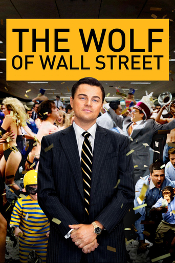

The Wolf of Wall Street
A New York stockbroker refuses to cooperate in a large securities fraud case involving corruption on Wall Street, corporate banking world and mob infiltration. Based on Jordan Belfort's autobiography.